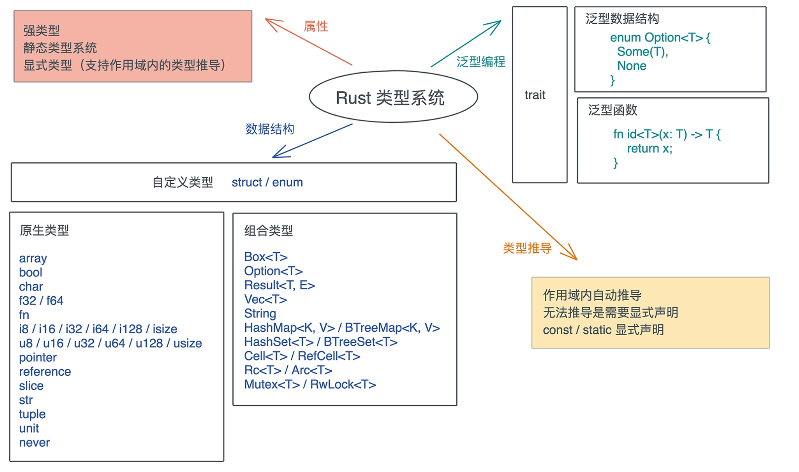

类型系统
1. 概述
- 类型大小, 类型在内存中对⻬、布局
- 类型推导
- 泛型
Trait- 类型转换
- 多态
Rust是一⻔显式静态强类型的类型安全语言
- 显式: 是因为它的类型推导在某些时候需要显示指定
- 静态: 表明它在编译期进行类型检查
- 强类型: 表明它不允许类型自动隐式转换,不同类型无法进行计算
- 类型安全: 表明它保证运行时的内存安全, 只能按照被允许的方法, 访问它被授权访问的内存

2 类型大小
2.1 可确定大小类型
use std::mem; fn main() { println!("{}", mem::size_of::<bool>()); println!("{}", mem::size_of::<u8>()); println!("{}", mem::size_of::<i8>()); println!("{}", mem::size_of::<u16>()); println!("{}", mem::size_of::<i16>()); println!("{}", mem::size_of::<u32>()); println!("{}", mem::size_of::<i32>()); println!("{}", mem::size_of::<f32>()); println!("{}", mem::size_of::<f64>()); println!("{}", mem::size_of::<char>()); println!("{}", mem::size_of::<()>()); }
2.2 动态大小类型
fn main() { let str = "hello world"; let prt = str.as_ptr(); let len = str.len(); println!("{:p}", prt); println!("{:?}", len); }
2.3 零值类型
零值类型: 类型的特别是可以提高性能或实现某些trait而不关心其数据
use std::mem; // 零大小类型, 不分配内存空间. enum Void {} // 空枚举 struct Foo; // 单元结构体 struct Bar { foo: Foo, qux: (), // 单元类型 bax: [u8; 0], // 空数组 } fn main() { println!("{}", mem::size_of::<()>()); println!("{}", mem::size_of::<Void>()); println!("{}", mem::size_of::<Foo>()); println!("{}", mem::size_of::<Bar>()); println!("{}", mem::size_of::<[(); 10]>()); }
3. 类型推导
3.1 自动推导
// Rust大部份情况下可以根据上下文明推导类型 fn main() { let a = 1; // 没有标注类型. let b = 2; // 没有标注类型. sum(a, b); // Rust 自动推导了a和b的类型. let elem = 5u8; let mut vec = Vec::new(); vec.push(elem); } fn sum(a: u32, b: i32) -> u32 { a + (b as u32) }
3.2 手动标注
// 引入 turbofish 操作符 ::<> fn main() { let x = "1"; println!("{:?}", x.parse::<u32>().unwrap()); }
4. 泛型
单态化 零成本抽象的一种实现,
其实在 Rust 里, 生命周期标注也是泛型的一部分, 一个生命周期 'a 代表任意的生命周期, 和 T 代表任意类型是一样的
5. Trait
Rust的trait提供了零成本抽象能力, 它定义了类型使用这个接口的行为
在 trait 中, 方法可以有缺省的实现.
在定义方法的时候, 频繁看到两个特殊的关键字：Self 和 self.
Self代表当前的类型, 比如File类型实现了Write, 那么实现过程中使用到的Self就指代File.self在用作方法的第一个参数时, 实际上是self: Self的简写, 所以&self是self: &Self, 而&mut self是self: &mut Self.
trait 的"继承"
在 Rust 中, 一个 trait 可以“继承”另一个 trait 的关联类型和关联函数. 比如 trait B: A , 是说任何类型 T, 如果实现了 trait B, 它也必须实现 trait A, 换句话说, trait B 在定义时可以使用 trait A 中的关联类型和方法
Trait 如何定义和使用

Trait Object 实现原理

6. 类型转换
无歧义完全限定语法
trait A { fn test(&self, i: i32) { println!("from trait A: {:?}", i) } } trait B { fn test(&self, i: i32) { println!("from trait B: {:?}", i) } } struct S(i32); impl A for S {} impl B for S {} fn main() { let s = S(1); A::test(&s, 2); <S as A>::test(&s, 2); B::test(&s, 2); <S as B>::test(&s, 2); }

7. 多态
静态类型系统, 多态可以通过参数多态(parametric polymorphism)、特设多态(adhoc polymorphism)和子类型多态(subtype polymorphism)实现.
- 参数多态是指, 代码操作的类型是一个满足某些约束的参数, 而非具体的类型.
Rust通过泛型支持. - 特设多态是指同一种行为有多个不同实现的多态. 比如加法, 可以 1+1, 也可以是 “abc” + “cde”、matrix1 + matrix2、甚至 matrix1 + vector1. 在面向对象编程语言中, 特设多态一般指函数的重载.
Rust通过trait支持. - 子类型多态是指, 在运行时, 子类型可以被当成父类型使用.
Rust通过trait object支持.
在 Rust 中, 参数多态通过泛型来支持、特设多态通过 trait 来支持、子类型多态可以用 trait object 来支持,
7.1 参数多态
它包括泛型数据结构和泛型函数
-
泛型数据结构:
Rust对数据结构的泛型, 或者说参数化类型, 有着完整的支持. 例:Option<T> -
泛型函数: 在声明一个函数的时候, 我们还可以不指定具体的参数或返回值的类型, 而是由泛型参数来代替
7.2 特设多态
包括运算符重载, 是指同一种行为有很多不同的实现
7.3 子类型多态
子类型当成父类型使用, 通过 trait object 来支持,